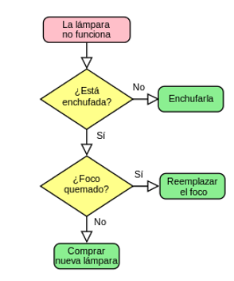

Un algoritmo informático es un conjunto de instrucciones definidas, ordenadas y acotadas para resolver un problema, realizar un cálculo o
desarrollar una tarea. Es decir, un algoritmo es un procedimiento paso a paso para conseguir un fin. A partir de un estado e información iniciales, se siguen una serie de pasos ordenados para llegar a la solución de una situación.
En programación, un algoritmo supone el paso previo a ponerse a escribir el código. Primero debemos encontrar la forma de obtener la solución al problema (definir el algoritmo informático), para luego, a través del código, poder indicarle a la máquina qué acciones queremos que lleve a cabo. De este modo, un programa informático no sería más que un conjunto de algoritmos ordenados y codificados en un lenguaje de programación para poder ser ejecutados en un ordenador.
No obstante, los algoritmos no son algo exclusivo de los ámbitos de las matemáticas, la lógica y la computación. Utilizamos numerosos algoritmos para resolver problemas en nuestra vida cotidiana. Algunos de los ejemplos más habituales son los manuales de instrucciones o las recetas de cocina.
En general, no existe ningún consenso definitivo en cuanto a la definición formal de algoritmo. Muchos autores los señalan como listas de instrucciones para resolver un cálculo o un problema abstracto, es decir, que un número finito de pasos convierten los datos de un problema (entrada) en una solución (salida). Sin embargo, cabe notar que algunos algoritmos no tienen necesariamente que terminar o resolver un problema en particular. Por ejemplo, una versión modificada de la criba de Eratóstenes, que nunca termine de calcular números primos, no deja de ser un algoritmo.
A lo largo de la historia, varios autores han tratado de definir formalmente a los algoritmos utilizando modelos matemáticos. Esto lo hizo Alonzo Church en 1936 con el concepto de "calculabilidad efectiva" basada en su cálculo lambda y por Alan Turing basándose en la máquina de Turing. Los dos enfoques son equivalentes, en el sentido de que se pueden resolver exactamente los mismos problemas con ambos enfoques. No obstante, estos modelos están sujetos a un tipo particular de datos, como son números, símbolos o gráficas mientras que, en general, los algoritmos funcionan sobre una vasta cantidad de estructuras de datos.
|  |